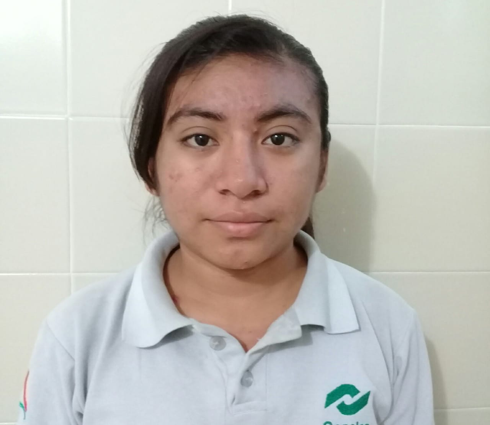

DATOS GENERALES
Nombre: Ana Gabriela Dzib Pech
Edad:17 años
Domicilio: Calle 22 s/n Centro
Codigo Postal: 24922
Fecha de Nacimiento: 2/10/2001
Correo:ana1234dzib@gmail.com
Estado: Campeche
Municipio: Calkini
Localidad: San Antonio Sahcabchen
Nacionalidad: Mexicana
Inicio
AFICIONES
Jugar basquetbol con mis amigos del albergue en tiempo libres
Escuchar Musica
Salir al parque
Me gusta pintar
Inicio
DEFECTOS
Soy una persona tímida y algo reservada a la cual me es muy difícil expresar mis emociones e inclusive hasta mis
pensamientos.
A veces me cuesta mucho tomar decisiones y antes de hacerlo, pienso mucho por si algo no puede salir bien.
Como no soy tan sociable, no tengo tantos amigos
Inicio
VIRTUDES
Soy una persona solidaria, respetuosa, honesta, pero cuando alguien busca hacerme daño o hacerme sentir mal, solo me guardo el
dolor o el sufrimiento que tal vez me causaría y a esa persona le demuestro fortaleza y le hago ver que yo puedo seguir mi camino, yo no tendría
rencor con nadie y siempre mi amistad estará a disposición de quien la quiera saber aprovechar para bien.
Me gusta escuchar a las personas
Inicio
DEFECTOS
Escuchar para también ser escuchada.
Enfrentar los problemas y poder solucionarlos de la mejor manera que se pueda
Inicio
MIS SUEÑOS Y COMO ME VERÉ DENTRO DE 10 AÑOS
Mis sueños es ser cada día una mejor persona, de poder terminar mi estudio y llegar a lo que es la carrera,
estudiaria administracion de empresas, ser una profesional y poder tener una familia con quien compartir mis alegrías. Sé que con todo mi esfuerzo, con el empeño de mis metas,
los sueños que quiero realizar, estoy segura de realizar mis sueños, no habrá un impedimento en mis ideas futuras ni ningún obstáculo
en mí vida. Y creo que dentro de 10 años tendre unos 28 años de edad, a punto de casarme y tener una familia con quien pasar el resto de mis dias,
de igual manera ya tendria un trabajo fijo
Inicio